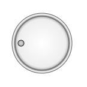

Главная → Ручка-регулятор
Ручка-регулятор – вращающийся элемент управления для изменения какой-либо величины (рис. 1).

Рис. 1 - Ручка-регулятор
Для создания объекта типа SegmentKnob необходимо подключить следующие скрипты:
Для создания объекта в функцию-конструктор передаются основные параметры:
id - идентификатор ручки в виде текстовой строки.
context - контекст типа CanvasRenderingContext2D для отрисовки ручки.
cx - координата X центра базового сегмента.
cy - координата Y центра базового сегмента.
r_in - внутренний радиус базового сегмента.
thickness - толщина базового сегмента.
init_angle - начальный угол базового сегмента в градусах. Может принимать отрицательные значения. angle - угол базового сегмента в градусах.
Внешний радиус базового сегмента r_out будет рассчитан автоматически в процессе создания объекта.
Объект примет форму кольца, если угол сегмента angle задать кратным 360 градусам.
Объект примет форму сегмента круга, если внутренний радиус r_in задать равным 0.
Объект примет форму круга, если выполнить оба этих условия.
Примеры использования различных свойств и методов объекта.
Ручка-регулятор - это составной объект. В его состав входят:
base_segment - базовый сегмент, определяющий основу ручки.
Также ручка имеет метку, которая указывает на текущее значение изменяемой величины.
Тип метки определяется параметром notch_type, который может принимать следующие значения:dot - метка представлена объектом типа SegmentDot.
mark - метка представлена объектом типа SegmentScaleMark.
Метка имеет следующие общие параметры:
notch_type - тип метки.
notch_init_angle - начальный угол метки отностительно базового сегмента. По умолчанию принимается равным половине угла базового сегмента.
notch_min_angle - минимальный угол метки.
notch_max_angle - максимальный угол метки.
notch_angle - текущий угол метки.
notch_width - толщина границ метки типа dot, либо толщина метки типа mark.
notch_color - цвет границ метки типа dot, либо цвет метки типа mark.
Для метки типа dot могут быть заданы следующие параметры:
dot_radius - радиус точки.
dot_base_radius - базовый радиус точки.
dot_gradient - градиент заливки точки.
dot_background - цвет заливки точки.
Для метки типа mark могут быть заданы следующие параметры:
mark_r_in - внутренний радиус метки.
mark_length - длина метки.
gradient - градиент заливки базового сегмента типа SegmentGradient.
background - цвет заливки базового сегмента (применяется, если не задан градиент заливки).
border_width - толщина границ базового сегмента.
border_color - цвет границ базового сегмента.
visible - видимость. Значение true обеспечивает видимость объекта.
notch_visible - видимость метки. Значение true обеспечивает видимость объекта.
in_progress - в процессе. Флаг принимает значение true в процессе анимации.
is_active - активность метки. Флаг принимает значение true при захвате и вращении ручки.
build() - выполняет основные вычисления формы и внешнего вида сегмента при его создании, изменении параметров и в процессе анимации.
Этот метод необходимо вызывать после изменения свойств объекта, чтобы они вступили в силу.calcBorder() - определяет стили границ сегмента. Вызывается автоматически из метода calc().
draw() - функция отрисовки сегмента.
instanceCopy() - создание независимой копии объекта.
isPointInside(x, y) - функция проверки принадлежности фигуре точки с координатами (x,y).
setNotchAngle(angle) - изменение положения ручки для приведения отметки к углу angle.
catchKnob(e) - захват ручки с помощью щелчка левой кнопки мыши на ней.
Метод установлен в качестве обработчика события mousedown на холсте.
Обработчик доступен через параметр mousedown для обеспечения возможности его удаления.
Удаление и переопределение обработчика необходимо в составных объектах (например, регуляторе уровня громкости).rotateKnobByMouseMovement(e) - вращение захваченной ручки перемещением курсора мыши.
Метод установлен в качестве обработчика события mousemove на холсте.
Обработчик доступен через параметр mousemove для обеспечения возможности его удаления.
Удаление и переопределение обработчика необходимо в составных объектах.rotateKnobByMouseWheel(e) - вращение захваченной ручки вращением колеса мыши.
Метод установлен в качестве обработчика события wheel на холсте.
Обработчик доступен через параметр wheel для обеспечения возможности его удаления.
Удаление и переопределение обработчика необходимо в составных объектах.releaseKnob() - освобождение захваченной ручки осуществляется отпусканием левой кнопки мыши.
Метод установлен в качестве обработчика событий mouseup и mouseout на холсте.
Обработчики доступны через параметры mouseup и mouseout сооответственно для обеспечения возможности их удаления.
Удаление и переопределение обработчиков необходимо в составных объектах.
События, запускаемые объектом SegmentKnob, реализованы с помощью CustomEvent.
В поле detail.knob передается ссылка на сам объект.
segment-knob-changed - ручка изменена.
Главная → Ручка-регулятор